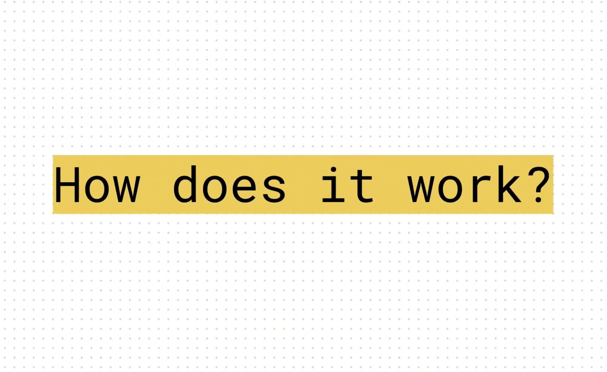

/code
Hey! Here's a deep dive into a technical project, OnionBot:
Skip to GitHub
Project Brief
In AI-assisted cooking, prior research focused on replacing home chefs with robotics, which loses the joy of cooking.
Conversely, my brief was to use computer vision to empower users to follow new recipes more effectively. Measure of success: a
minimally-invasive device that provides useful nudges and interventions.
Technical Challenges
The main software challenges tackled:
- Cooking is a broad challenge Narrowing project scope
- Training data isn't available Building recipe datasets
- Building a System Architecture from scratch
- Demistifying AI Explaining to the open-source community
Collaboration
I can't share other collaborative codebases due to NDAs. This project is a response to an individual dissertation brief, I'll
acknowledge it would benefit from some diversity of ideas and expertise! For some more collaborative side-projects, check out
WTHR and Inky
Continue
OnionBot
Self-driven Individual Master's Project
@ Imperial College, London
Python
HTML
CSS
JS
Flask
GCP
AutoML
Coral
Links:
With thanks to DB (supervisor).
OnionBot
Exploring cooking automation @ Imperial College London
Narrowing scope & encoding recipes
Food image classifiers show poor results in real-world scenarios due to the complexity and variability of food images. To narrow the
scope:
- The fixed camera view above the stove provides a consistent environment for capturing images.
-
Instead of pursuing a general classification approach, I proposed a milestone-based method where only key cooking events,
'milestones', are labelled for each recipe. This simplifies the perception challenge by significantly reducing the
classification scope (from 1000s to 10s).
Recipes are encoded in a Python dictionary object:
Code.
Building recipe datasets
As these datasets don’t currently exist, I built an interface for the easy creation of labelled datasets of cooking images. With the
control panel, users click along with each milestone as they cook, and labelled images are automatically uploaded to the cloud, where
model training platforms can access them. Training is streamlined using Google AutoML, allowing models to be trained for new recipes
with just a few clicks.
Interfaces are built in HTML/CSS/JS with Bootstrap 4: Code.
System Architecture
The project aims to provide automation without adding excessive complexity; instead of replacing the chef, OnionBot
augments the chef with multitasking superpowers. The human provides the 'actuation', enhanced by a touchscreen interface 'sous-chef'
that offers instructions, reminders, and alerts. OnionBot watches the pan so that the chef can concentrate on culinary creativity.
This human-centred approach is a novel concept in cooking robotics research.
The system API is built in Python using a local Flask server: Code.
Demistifying AI
Inspired by a great video by the Experiments by Google team, I shot a film explaining
OnionBot. It gained almost 10K views on YouTube!
-


I open-sourced OnionBot to encourage further research; Texas-based Hill Yu reached out to me; he has built an OnionBot
prototype (second slide, above) called Kitchen Automatique and fundraised $40K to
commercialise the idea. Wishing Kitchen Automatique the best of luck!